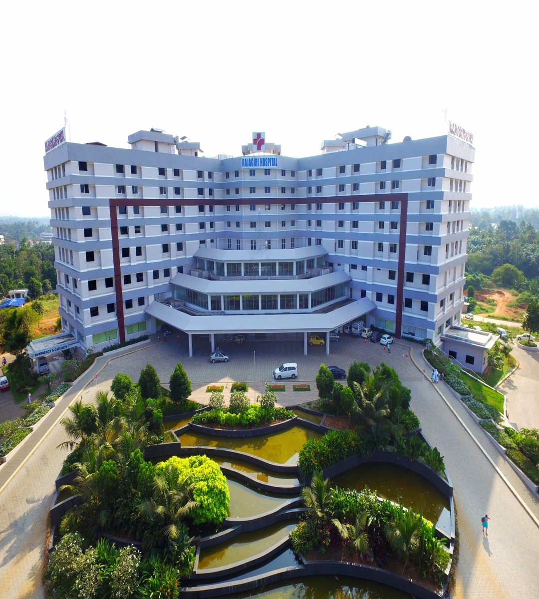

<div class="container">
    <div class="row">
        <div class="col-md-6">
            <div class="header mt-2">
                <h1><b>About</b></h1>
            </div>
            <div class="section1">
                <h2><b>How is our standard?</b></h2>
                <p>We are providing..</p>
                <ul>
                    <li>
                        <p>One of the best hospitality services throughout in India.</p>
                    </li>
                    <li>
                        <p>we focus on patient safety and quality of the delivery of services by the hospitals in the
                            changing healthcare environment.</p>
                    </li>
                    <li>
                        <p>
                            ISO Certification for Hospital | ISO 9001 | ISO 14001
                            To streamline the regular hospital operations, and contain the global best practices, ISO
                            9001 certification is a universally practised quality management standard, adopted by
                            organizations all across the world to systematise and raise the service provided to
                            consumers</p>
                    </li>
                    <li>
                        <p>We have international standard of equipments</p>
                    </li>
                    <li>
                        <p>Well trained and well experienced doctor specialists</p>
                    </li>
                    <li>
                        <p>24*7 Ambulance services </p>
                    </li>
                    <li>
                        <p>24*7 Doctors are available in our hospital </p>
                    </li>
                </ul>
            </div>
            <hr>
            <h3><b>Quality Focus</b></h3>
            <p>Since its inception, Modern Health-Care Cetre has been the pioneer in Quality and Patient Safety in India
                and the focus has always been on affordable Safe Quality Care. The chairman, Dr M.I.Sahadulla’s
                philosophy about quality forms the core of all decisions, whether the issues are centered on clinical,
                administrative, financial, operations or any other aspect of healthcare.</p>
            <p>Modern Health-Care Cetre is the first hospital in India to get an International (Australian Council for
                Health standards International) and National accreditation (NABH - National Accreditation Board for HCO)
                way back in 2006 when quality was comparatively a new concept in Indian healthcare Industry. Currently
                KIMSHEALTH has 8 accreditations which include – ACHSI, NABH, NABL, NABH – Nursing, Medical Imaging
                Services, Blood bank, Emergency Department & National Neonatal Forum Level-III B for Neonatology. These
                accreditations ensure safe and benchmarked practices in KIMSHEALTH. We received Patient safety award in
                the year 2009, Golden Peacock Award for Quality in Health Services in the year 2013 and AHPI award for
                Quality beyond accreditation. Dr M.I Sahadulla is the only Asian Healthcare Leader to receive the
                prestigious ACHSI Gold Medallion for his contribution to Quality and Patient Safety.</p>
            <p>The sustenance of Quality in health care delivery is an essential and important factor which is only
                possible by implementing effective systems in place. Key Performance Indicator is an effective tool to
                measure the patient outcome. 72 mandatory indicators help the departments to ascertain that the outcome
                is measured and benchmarked to international standards. Any spike/trends in KPI are noted by the
                concerned department and measures are taken to benchmark it to accepted standards. Regular audits are
                performed on clinical outcomes and these results are published to all staff.</p>
        </div>
        <div class="col-sm-6 logistics">
            <div class="image">
                
            </div>
            <h6 class="bottom">Mordern Health Care Centre</h6>
            <hr>
            <h2><b>Our logistics</b></h2>
            <p>Today, we stands among the top 10 hospitals in India with top-notch healthcare delivery systems,
                evidence-based medicine, high-end facilities, and quality-oriented practices. The Group started in the
                year
                2002 with its flagship quaternary-care hospital . From there, we are one of the largest healthcare
                networks,
                growing from a 250-bed to a 2000-bed healthcare group, with hospitals in major cities like Trivandrum,
                Kollam, Kottayam and Perinthalmanna; in addition to its hospitals in Bahrain, Oman, Saudi Arabia, Qatar
                and
                UAE. The group's newest addition, our second hospital is an outstanding healthcare facility with the
                most
                modern Operation Theatres, ICUs of international standards and a Transplant Program for the Kidney,
                Liver,
                Pancreas, Heart and Lungs. In addition, it will be a centre of excellence for wellness, High-risk
                obstetrics, advanced Perinatology and Neonatology</p>
            <hr>
            <h2><b>Mission, Vision and Values</b></h2>
            <h5><b>Our Vision</b></h5>
            <p>“To be a leading healthcare organization of excellence that transforms lives through exceptional care.”</p>
            <h5><b>Our Values</b></h5>
            <p>“Compassion, Affordability, Ethics, Quality, Excellence, Transparency, Innovation, Trust”</p>
            <h5><b>Our Mission</b></h5>
            <p>“To provide high quality cost effective care with courtesy, compassion and competence.”</p>
        </div>


    </div>


</div>